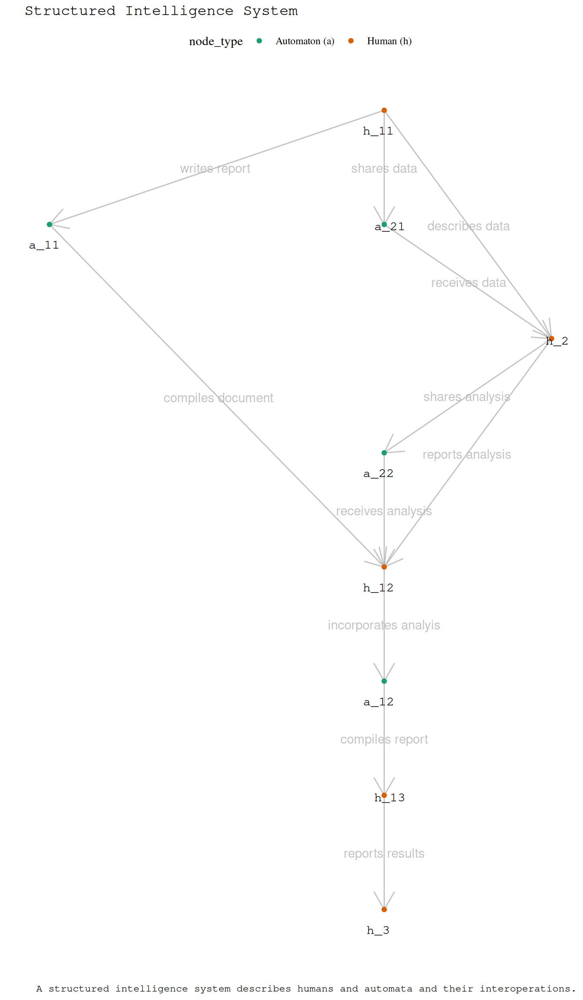

I_edges# A tibble: 3 × 3
from to edge_label
<chr> <chr> <chr>
1 G I GI
2 I H IH
3 H G HG Dr Charles T. Gray, Datapunk ![]()
Without ways of bounding and measuring how technology affects us, we have no chance of governing the choas of technology in our lives.
I want to know what we know, so that we know how much we don’t know. Because right now I think we all have structured intelligence governance levels in violation of the laws of robotics.
Why aren’t there fines for this? Maybe because no one knows how to measure it.
Look, I’m just a data engineer who studied a bit of math a while back.
But, this argument only uses first principles.
The category of intelligence governance is a discrete topological dynamical system that governs emergence for human wellbeing in a structured intelligence system.
We will use code examples to help uncover the structure of these mathematical inventions. We begin by constructing this as a computational object I_vis, a ggraph visualisation of the category.
I_edges# A tibble: 3 × 3
from to edge_label
<chr> <chr> <chr>
1 G I GI
2 I H IH
3 H G HG I_nodes# A tibble: 3 × 3
node node_label node_type
<chr> <chr> <chr>
1 G Governance (G) Governance (G)
2 I Intention (I) Intention (I)
3 H Heuristic (H) Heuristic (H) I_graph# A tbl_graph: 3 nodes and 3 edges
#
# A directed simple graph with 1 component
#
# Node Data: 3 × 3 (active)
name node_label node_type
<chr> <chr> <chr>
1 G Governance (G) Governance (G)
2 I Intention (I) Intention (I)
3 H Heuristic (H) Heuristic (H)
#
# Edge Data: 3 × 3
from to edge_label
<int> <int> <chr>
1 1 2 GI
2 2 3 IH
3 3 1 HG I_vis
To show this is true, we will need to:
A structured intelligence system is a directed graph representing humans and automata interoperating toward some intention with objects and morphisms.
Suppose we have a data scientist h_1
humans[1] "h_1" "h_2" "h_3"automatons[1] "a_1" "a_2"S_edges# A tibble: 11 × 3
from to edge_label
<chr> <chr> <chr>
1 h_11 a_11 writes report
2 h_11 a_21 shares data
3 h_11 h_2 describes data
4 a_11 h_12 compiles document
5 a_21 h_2 receives data
6 h_2 a_22 shares analysis
7 a_22 h_12 receives analysis
8 h_2 h_12 reports analysis
9 h_12 a_12 incorporates analyis
10 a_12 h_13 compiles report
11 h_13 h_3 reports results S_nodes # A tibble: 9 × 3
node node_type node_label
<chr> <chr> <chr>
1 h_11 Human (h) h_11
2 a_11 Automaton (a) a_11
3 a_21 Automaton (a) a_21
4 h_2 Human (h) h_2
5 a_22 Automaton (a) a_22
6 h_12 Human (h) h_12
7 a_12 Automaton (a) a_12
8 h_13 Human (h) h_13
9 h_3 Human (h) h_3 S_graph# A tbl_graph: 9 nodes and 11 edges
#
# A directed acyclic simple graph with 1 component
#
# Node Data: 9 × 3 (active)
name node_type node_label
<chr> <chr> <chr>
1 h_11 Human (h) h_11
2 a_11 Automaton (a) a_11
3 a_21 Automaton (a) a_21
4 h_2 Human (h) h_2
5 a_22 Automaton (a) a_22
6 h_12 Human (h) h_12
7 a_12 Automaton (a) a_12
8 h_13 Human (h) h_13
9 h_3 Human (h) h_3
#
# Edge Data: 11 × 3
from to edge_label
<int> <int> <chr>
1 1 2 writes report
2 1 3 shares data
3 1 4 describes data
# ℹ 8 more rowsS_vis 
We invoke human in the conventional sense of the term and note that humans self-generate intention.
An intention requires human thought and is self-generating.
An automaton transforms human intention and heuristics (rules) written by humans to some output . An automata does not have intention innately, only rules.
As defined by Asimov in I, Robot (Asimov 1950).
Adapted from the three laws.